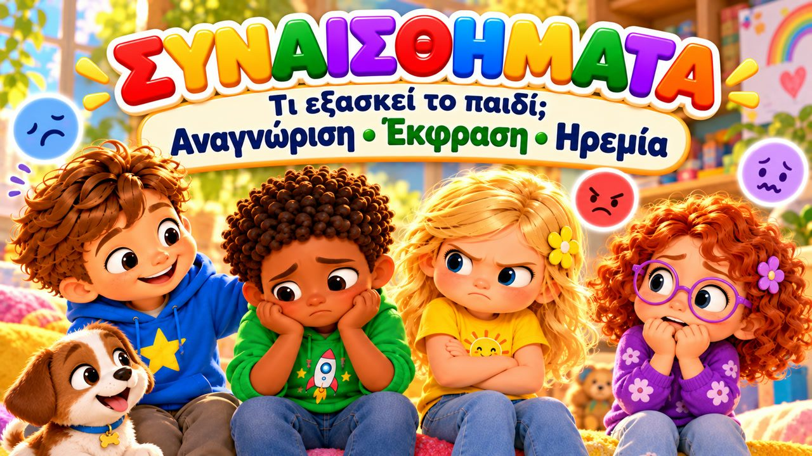
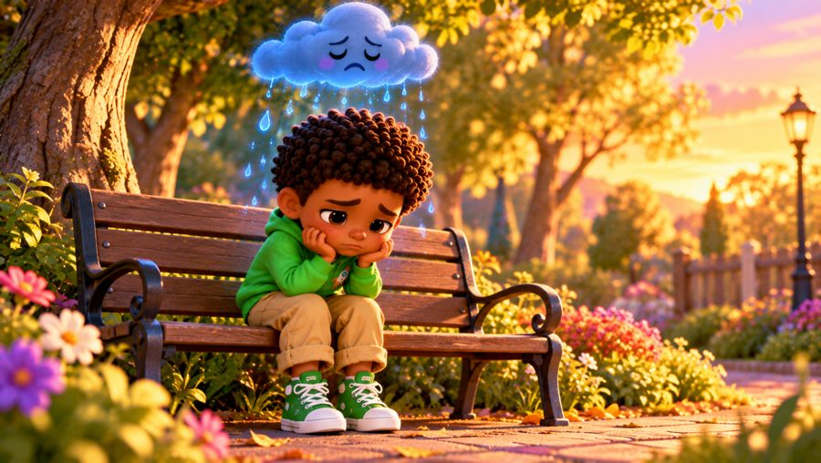
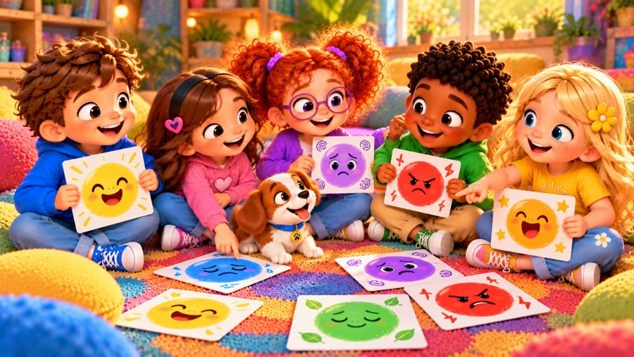

Τα Συναισθήματά Μου
Ένα τρυφερό τραγούδι για τα συναισθήματα! 💜 Τραγουδήστε με τον Μαξ, τη Μία, τον Τζέι, τη Λίλη, τη Ρόζα και τον σκυλάκο Μπάντι, που μαθαίνουν ότι κάθε συναίσθημα έχει ένα όνομα — χαρά, λύπη, θυμός, ανησυχία, ενθουσιασμός, ηρεμία — και ότι όλα είναι σημαντικά.
🖍️ ΔΩΡΕΑΝ σελίδες ζωγραφικής, στίχοι & φύλλο δραστηριότητας για αυτό το τραγούδι ➜ dexiotitesmetragoudi.github.io

▶👨👩👧 Τι μαθαίνει το παιδί
- Να ονομάζει τα συναισθήματά του
- Ότι όλα τα συναισθήματα είναι αληθινά και σημαντικά
- Να σταματά και να παίρνει μια βαθιά ανάσα
- Να λέει πώς νιώθει και να ζητά μια αγκαλιά όταν τη χρειάζεται
💬 Κουβέντα μετά το τραγούδι
- Πώς νιώθεις σήμερα; Τι χρώμα έχει αυτό που νιώθεις;
- Τι σε βοηθά όταν είσαι λυπημένος ή θυμωμένος;
- Σε ποιον μπορείς να πεις πώς νιώθεις;
🖨️ Δωρεάν εκτυπώσιμα
Δωρεάν για χρήση στο σπίτι και στην τάξη. Εκτυπώστε σε χαρτί Α4.
🖼️ Σκηνές από το τραγούδι




🎤 Στίχοι – Τα Συναισθήματά Μου
Πώς νιώθω σήμερα;
Για να δω...
Χαρούμενος;
Λυπημένος;
Θυμωμένος;
Ή ήρεμος;
Ό,τι κι αν νιώθω...
μπορώ να το πω!
Όταν νιώθω τη χαρά,
σαν τον ήλιο φωτεινή,
ένα γέλιο ξεπηδά
και μου φτιάχνει τη στιγμή!
Μα υπάρχουν και στιγμές
που η λύπη θα φανεί,
σαν ένα σύννεφο γαλάζιο
που περνάει απ' την ψυχή.
Κάθε αίσθημα που νιώθω
κάτι θέλει να μου πει,
κι όταν μάθω τ' όνομά του,
το καταλαβαίνω πιο πολύ!
Σταματώ για μια στιγμή,
παίρνω μια βαθιά αναπνοή.
Κοιτάζω μέσα μου να δω...
Τι είναι αυτό που νιώθω εγώ;
Τα συναισθήματά μου
έχουν όνομα κι αυτά!
Χαρά, λύπη, θυμός,
όλα είναι αληθινά!
Ανησυχία, ενθουσιασμός,
κι η ηρεμία μαζί,
όταν λέω πώς αισθάνομαι,
καταλαβαίνω πιο πολύ!
Το νιώθω!
Το βρίσκω!
Το λέω δυνατά!
Τα συναισθήματά μου
είναι όλα σημαντικά!
Όταν ο θυμός μου έρχεται,
κόκκινος και δυνατός,
μπορώ λίγο να σταματήσω,
να πάρω ανάσα και να δω.
Κι όταν έχω ανησυχία,
πεταλούδες στην κοιλιά,
μπορώ να πω «φοβάμαι λίγο»
και να ζητήσω μια αγκαλιά.
Κι όταν έχω ενθουσιασμό,
θέλω πάνω να πηδώ!
Μα όταν έρχεται ηρεμία,
παίρνω ανάσα και χαμογελώ.
Σταματώ για μια στιγμή,
παίρνω μια βαθιά αναπνοή.
Κοιτάζω μέσα μου να δω...
Τι είναι αυτό που νιώθω εγώ;
Τα συναισθήματά μου
έχουν όνομα κι αυτά!
Χαρά, λύπη, θυμός,
όλα είναι αληθινά!
Ανησυχία, ενθουσιασμός,
κι η ηρεμία μαζί,
όταν λέω πώς αισθάνομαι,
καταλαβαίνω πιο πολύ!
Το νιώθω!
Το βρίσκω!
Το λέω δυνατά!
Τα συναισθήματά μου
είναι όλα σημαντικά!
Κίτρινο σαν τον ήλιο!
ΧΑΡΑ!
Μπλε σαν τη βροχή!
ΛΥΠΗ!
Κόκκινο και δυνατό!
ΘΥΜΟΣ!
Μωβ πεταλούδες στην κοιλιά!
ΑΝΗΣΥΧΙΑ!
Πορτοκαλί και γεμάτο ενέργεια!
ΕΝΘΟΥΣΙΑΣΜΟΣ!
Πράσινο και απαλό...
ΗΡΕΜΙΑ!
Και όλα αυτά πού βρίσκονται;
ΜΕΣΑ ΜΟΥ!
Δεν χρειάζεται να κρύβω
αυτό που νιώθω στην καρδιά.
Μπορώ να βρω το όνομά του
και να το πω καθαρά.
Νιώθω...
Ονομάζω...
Καταλαβαίνω...
Και επιλέγω τι θα κάνω!
Τα συναισθήματά μου
έχουν όνομα κι αυτά!
Χαρά, λύπη, θυμός,
όλα είναι αληθινά!
Ανησυχία, ενθουσιασμός,
κι η ηρεμία μαζί,
όταν λέω πώς αισθάνομαι,
καταλαβαίνω πιο πολύ!
Το νιώθω!
Το βρίσκω!
Το λέω δυνατά!
Ό,τι κι αν αισθάνομαι,
μπορώ να το εκφράσω καθαρά!
Χαρά!
Λύπη!
Θυμός!
Ανησυχία!
Ενθουσιασμός!
Ηρεμία!
Όλα είναι κομμάτια μου,
κι όλα έχουν σημασία!
Πώς νιώθω τώρα;
Για να δω...
Θα σταματήσω,
θα σκεφτώ...
Και όταν βρω το συναίσθημα,
με το όνομά του θα το πω!